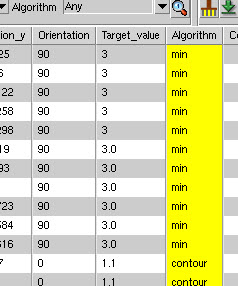

CMi can highlight markers with more than
one algorithm identified during the automatic algorithm assignment
process. You can then manually choose between the identified algorithms
to assign to the marker.
Procedure
- Right-click
the highlighted conflict in the Marker window and select “resolve
Algorithm conflict”.
Conflicts are
highlighted in yellow in the following figure:
Figure 1. Algorithm Conflict Highlighted in CMi
- A pop-up
dialog appears, displaying the possible algorithms to select. In
the pop-up dialog box, select between the identified algorithm values
and click OK.